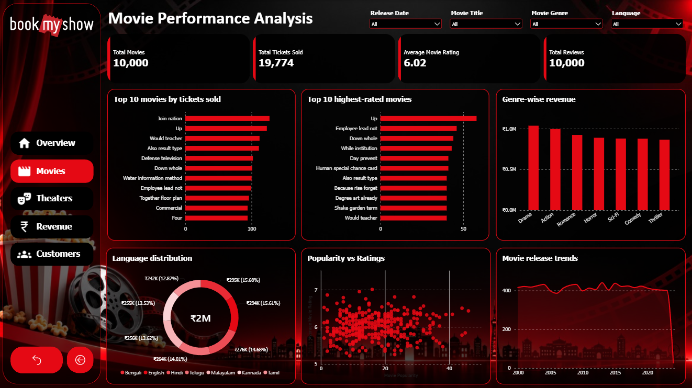
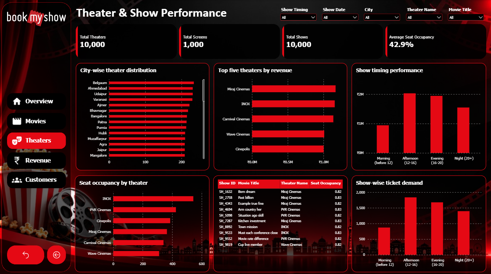

Power BI Dashboards
Five connected report pages designed to monitor platform performance, movie popularity, theater utilization, revenue and customer engagement.
Dashboard preview gallery
The screenshots below are the dashboard images supplied with this project. Open each image to inspect the report layout and visuals.
PBIX download not available yetThe actual Power BI project file (.pbix) was not included, so this portfolio cannot provide a working PBIX download yet. Add your .pbix file to the project package and link it here.
01 · Executive Business Overview
Platform KPIs, monthly revenue and bookings, city-wise revenue, genre distribution and payment status.

02 · Movie Performance Analysis
Top movies by tickets sold and ratings, genre revenue, language distribution, popularity vs ratings and release trends.

03 · Theater & Show Performance
City-wise theater distribution, top theaters by revenue, show timing, seat occupancy and ticket demand.

04 · Revenue & Payment Analysis
Monthly revenue, revenue by city and genre, transaction status, ticket sales and payment method distribution.

05 · Customer & Review Analysis
Customer age distribution, repeat customers, booking frequency, top customers and review ratings.

Dashboard requirements & slicers
| Page | Purpose | Primary slicers |
|---|---|---|
| Executive overview | Overall platform performance | Booking Date, City, Movie Genre, Language |
| Movie performance | Popularity, preferences and ratings | Genre, Language, Release Date, Movie Title |
| Theater & show performance | Theater performance and high-demand shows | City, Theater, Show Date, Movie Title, Show Timing |
| Revenue & payment | Revenue generation and transaction performance | Payment Date, Payment Method, Transaction Status, City |
| Customer & review | Engagement, repeat bookings and satisfaction | Age Group, Booking Date, Movie Title, Rating |